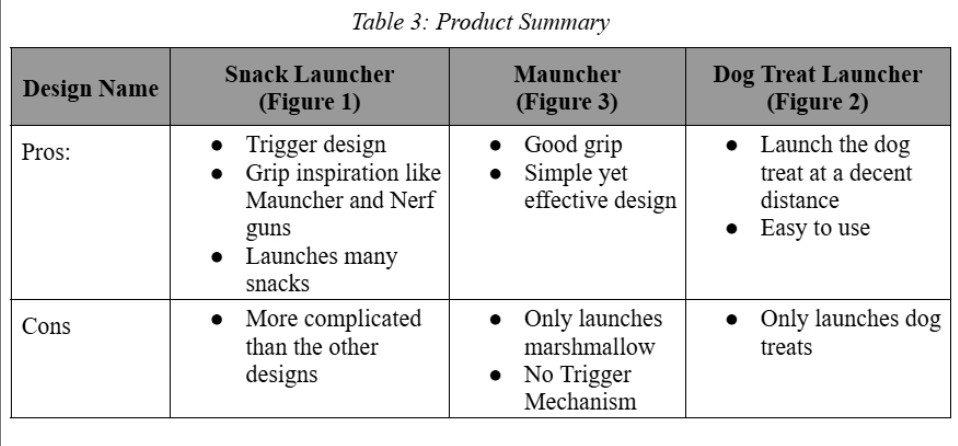
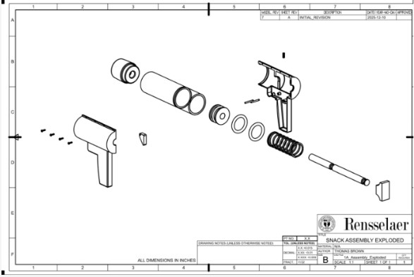
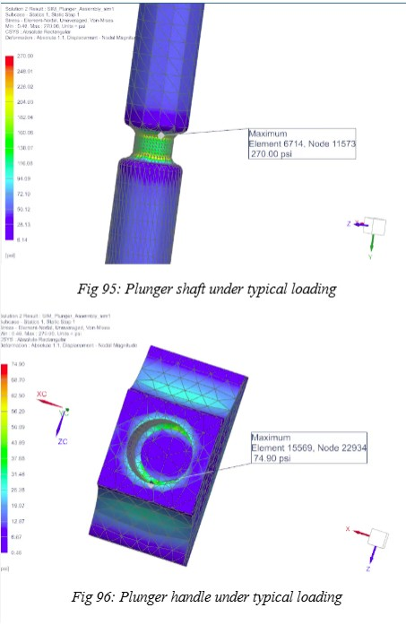
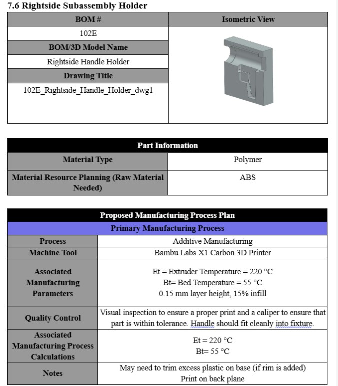
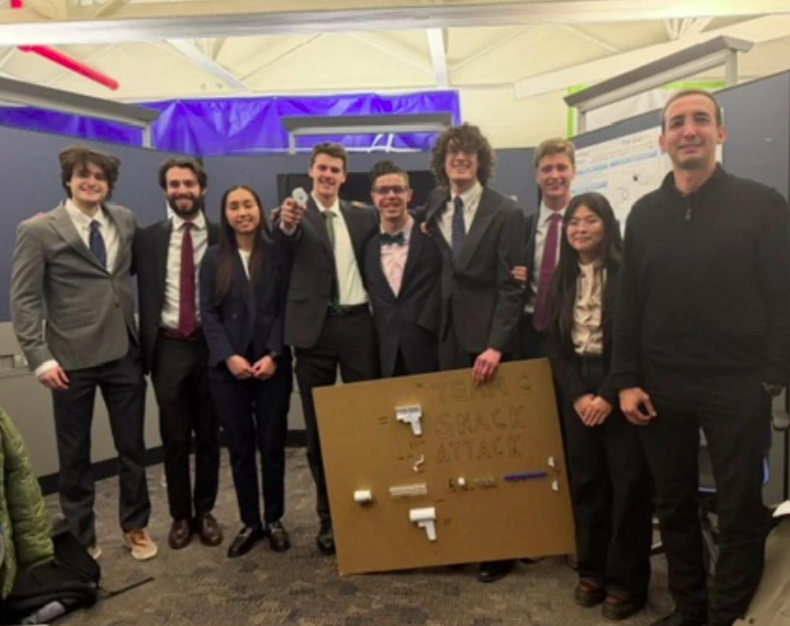
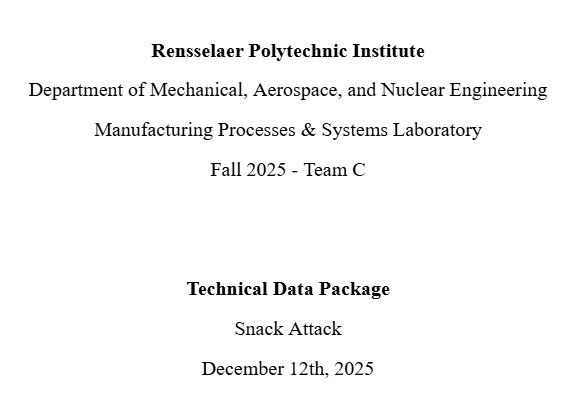

Back to projects
Project Part Of MPS Class
Snack Launcher
Designed and validated a repeatable mechanical launch system within a
10-person engineering team. Delivered a fully documented technical data
package including calculations, CAD models, and manufacturing drawings.
Overview
Snack Launcher
A mechanically actuated launch system built around repeatable performance,
safe operation, manufacturable parts, and complete engineering
documentation.


The Engineering Challenge
- Design a mechanically actuated device capable of launching a snack projectile.
- Meet defined performance, safety, and manufacturability constraints.
- Ensure repeatable launch performance under controlled loading conditions.
- Deliver complete engineering documentation for manufacturing and validation.
System Architecture
- Spring-based energy storage system for controlled projectile acceleration.
- Mechanical trigger and release mechanism for safe actuation.
- Barrel assembly optimized for alignment and repeatability.
- Structural housing designed for load transfer and rigidity.
- Modular assembly enabling serviceability and part replacement.


Structural & Analytical Validation
- Identified peak loading conditions during spring compression and release.
- Performed stress calculations at critical load-bearing interfaces.
- Verified safety factors against material yield limits.
- Reinforced high-stress regions to prevent localized failure.
- Iteratively refined geometry to reduce stress concentrations.
Manufacturability (DFM)
- Selected materials balancing strength, cost, and machinability.
- Designed components for efficient machining and minimal post-processing.
- Applied tolerance control to ensure reliable fit and alignment.
- Reduced part complexity to simplify assembly.
- Developed structured assembly sequencing documentation.


My Contributions
- Served as Plastics Engineer, guiding material selection and component geometry for manufacturability.
- Optimized designs for DFM, improving part feasibility and reducing unnecessary complexity.
- Acted as Vice Project Manager, assisting in task delegation and team coordination across a 10-person group.
- Independently machined and fabricated the functional prototype, translating CAD models into physical hardware.
- Contributed to development and organization of the 200+ page technical data package.
Technical Data Package
Documentation
The final technical data package includes the engineering calculations,
CAD documentation, drawings, and manufacturing validation material produced
for the project.
